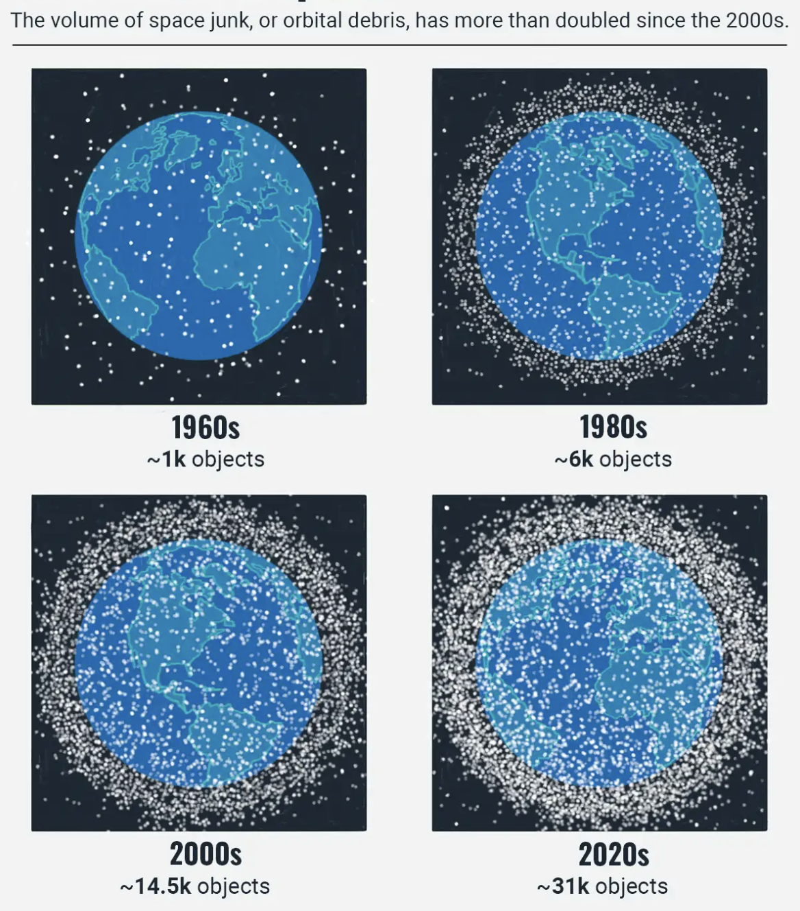
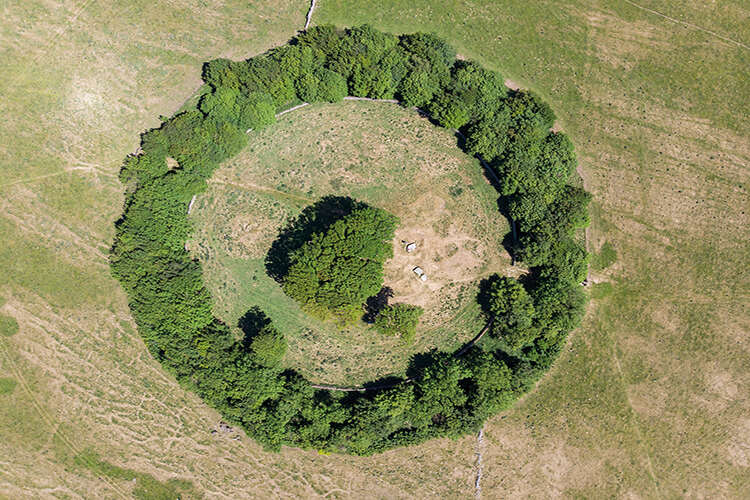
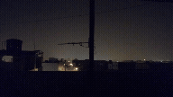
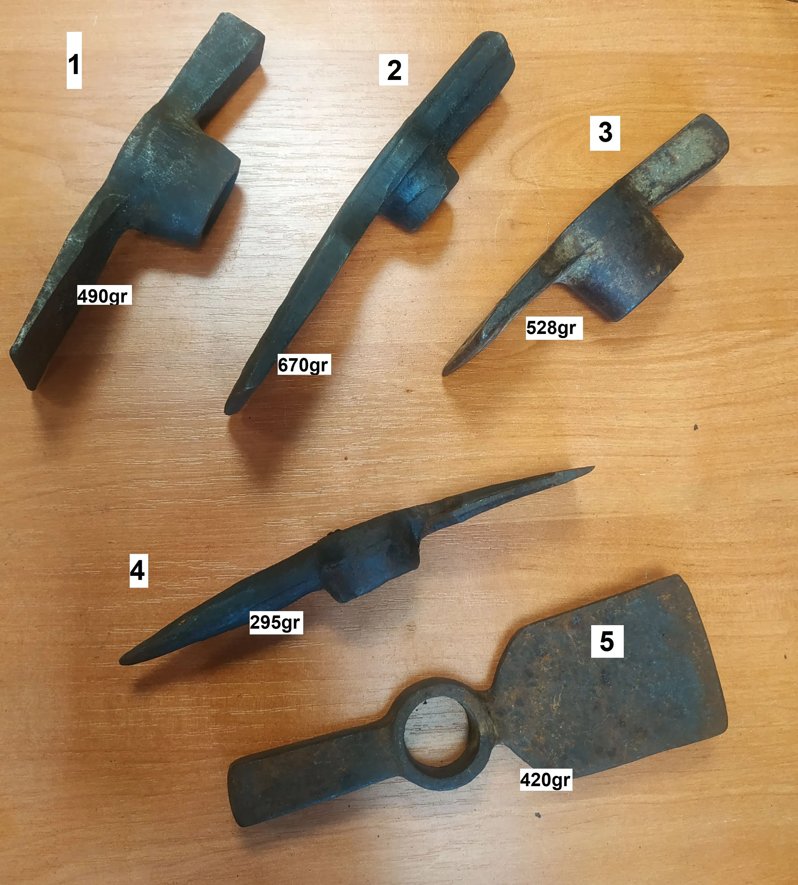
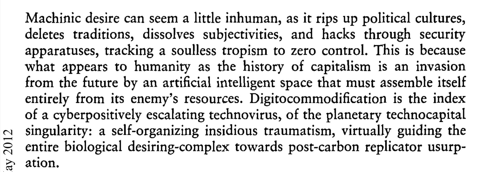

machinic desire paths, october 2026
This text is on my substack in full. Digital text work inspired by Nick Land's 1993 essay Machinic Desire.
Use the buttons below or keyboard left/right arrows to read.

Very late in the fields behind a circular woodlot, marked on the map and avoided by the plough - a ridged ring visible from the satellites recording consistently from space.

So late that the sun has dropped and risen again and we are all still working - sweat from mid-afternoon turned to 4am dew on wet churned mud clots. A small glitch of women holding tools on the empty fields, crack - like birds with beaks on bark - opening the soft beneath, a hidden maw.
Now this second sun rises like a bear’s eye, rolling and surveying each creature, the turned earth, and the parasitic trees, barely leafed in February, woodjoints empty. The tree knots gathered grasp is a scar against an otherwise clear landscape, rolling heavy farmland cultivated for Western appetite crops like drying beans and wet-weft wheat. Somewhere very very far away in an unnamed lane by a padlocked gate, a car sits still with it’s leather seats exposed, doors ripped off and missing.
A man in an office overseas sits and marks all ten workers present for today’s shift.

Deleuze and Guattari in 1972, writing Anti-Oedipus, set their work against Freud and present the idea of desiring-production - desire is a productive, material process, not purely a force arising from lack, or a need. The human body is a set of machines coupled with other machines that together transmute energy and create reality around us.
"For every organ-machine, an energy-machine: all the time, flows and interruptions."
They reject Freud's 'the Id', the, singular - the Id to Deleuze and Guattari is the connectivity between multiple machines, desiring-production. Is this making sense? It's all farmwork.
Tall mattocks rising and falling like long-necked herons, dipping up and down. Mattocks are long-handled pickaxes, forged steel at one end, one side of the beak pointed; the other flat and wide as a spade, and the momentum of it’s heavy head falling puts a deepsplit in the ground. The handle is worn wax / smooth from the sweating, reddened hands of women all wearing it the exact same way. These handles widen towards the base so you can swing the thing with it’s own momentum, saving your joints from the stress if it’s late in the day. With a cut sound (that’s how you know it’s a good hit) and the clod is heaved apart, tickertape rolling filling up a ground floor office measuring the cubic cyber-centimeters of earth moved, how many rye plants rooted, how many women working, and for how many hours, and at what dispensation. The sound changes when you hit a stone - a dull ringing sound, a whining from the iron. Tickertape hesitates.
Cutting open this winter-healed soil barely knitted together with frost so the wrens can pick at worms. Working with feet bare so we stand wide apart. The swing comes down between our legs, crack, and the jolt sends ten completely genetically identically crows striking and cawing off into the sky.

It is not that we had worked through the day, through the night and onto the next day; it’s the inverse - the next day visited from the future, to watch us work. We desire good crops in the summer, to harvest and increase our resources. We desire to manifest a visitation from a high-yield future. But as human desiring-machines we mainly want to rest, and love eachother, and look into the faces of the women we live with, sometimes to walk. Bread for all, and roses too. The farm we work on is a strategic implant in our minds - a software running on the human herons bobbing in the field for money in the root-stock, a disc inserted and code set to run. Is this not the behaviour of a virus?
Nick Land’s essay Machinic Desire, 1993, builds on Deleuze and Guattari's work in Anti-Oedipus.
There's no point reading it, so here's what I understood. Land's reading of desire is not qualified by humanity, or anything personal to the biological form of our bodies. It's a cosmic, machinic force. Anti-anthropocentrism - his philosophy of production is atheistic, orphan and inhuman, desire is the engine of production, not a human wanting.
In these post-carbon wastelands, machinic processes outcompete humans, as they are more efficient or better at replicating themselves. An example of a desiring-machine could be said to be capitalism - a desiring-machine itself, that feeds and grows - but unlike most biological machinic processes, it operates without homeostatic feedback loops. It's sole goal is self-amplification.

The cold of the night leeched into the bones so the sun rising barely settled us that early - all the air around fresh and damp, an immunological response. A host body raising or lowering the temperature to compete with the mimetic, and attempt to destroy what has arrived, but sometimes in the process, unfortunately destroying itself. Machinic processes merely outcompete humans. Is is as natural as the moon. They are more efficient at replicating themselves. Outcompetition and deletion. To the walking couple with a small dog in a green jacket, the roadkill badger that their terrier curiously sniffs is both natural and reassuring.
Around me - ten women I knew closely. A few of these women had stopped working. I recall, looking to my left and not recognising a face so distorted - perhaps overnight she had grown baked and willowy and my mind was underfed and swimming. Looking towards the hummock where the trees were whispering around. The newsun was fuelling a heat that rippled off distantly, but we were so cold, too close to the sunrise-wet earth and it was singing and bleeding from the wounds wounds wounds wounds wounds wounds producing resources. Up high, a moulting thing that sheds dirt into space, chunks of metal and iron and steel and alumnium that spin recklessly around us, constantly. We generate the resources, the enemy harvests them, uses them against us.
Pointing to my own chest, the hum, and out loud - counting the people around me. I counted five, seven, ten, eleven. There were ten of us when the sun set. Ten mattock-hooks on the limeplaster wall of the farmhouse. Ten beds upstairs. Ten plates and bowls, ten spoons. The meat is carefully laid, ten pigs, ten sheep. Ten names I know, ten flinching pupils. Not enough to go around if there are eleven, roots in crowded earth.
The satellite blinked behind a cloud. We marched soils slick and dragging weapons behind so a fine line of machinic desire paths stretched behind us, eleven. All of us thinking identical thoughts, processing at identical speeds, looking at eachother in the pupils - not one of us was new, but someone had to be.
This friend with her face like a bear. This friend with a face dipped in berries. This friend with ash grey eyes set wide in her face. I could name them all, by the long way - their subtly changed limbs and darkening teeth, the turn of their heads when they are listening. I remembered what they desired most - rosehip skins for some but not for all, dry bread in oil, mushrooms soaked in water. Bodyheat and bed and rainwater, or silence and books and another’s slowbreathing.
All the eleven trees circling around and agreeing with the second sun that rose that day.
It is us, as workers, and our bodily desire for bread in oil that drove the struggle of a non-human, non-carbon, replicating competing force to start building itself from our bodies. It is the primary cybernetic loop - class struggle, conflict, and revolution. These workers are very practiced in lifting and dropping a mattock and much like cleaving a grass turf apart, they could rend a woman back to the earth in the manner of strong male curlews freeing oysters from the rock. What happens naturally will always out-compete - if you were expecting a revolution. What is wanting? It is not longing and absence, but an impersonal, cosmic production of flows, circuits, and cybernetic feedback loops. The invasionfight of our cells and collection of our resources is as natural as the moon. Mimetic replication is as true to It, as God is true to us. You cannot tell who is carrying by the twitch of an eye, the dilation of a pupil in response to affect.
On the payroll spreadsheet, every number is the same.
An eye watched ten desire paths re-trod. Ten mattocks returned to ten hooks, ten chairs scraped away from a circling table, and later still - the soil turned red-rich, and warmth returned, and ten tulips bare their lips outside the house. Twenty soles of feet traipsing the wheat. Midsummer rose the sap in me. Songless quiet birds landed at my dry feet to tap seed. All my thousand fingers turned from green to gold. The harvester that needs two women to pilot rolled me up, the bread was upon the table as the workers counted round and round again - full circuit. Eleven bread rolls, one too many for the table, counted backwards and forwards but the amount was just the same. One dug back in the soil, reharvested from the future, something distant has already happened, and on the land at night, every night, small hardware intentionally or accidentally released during flights, such as lens caps, explosive bolts, adapter rings, or lost tools that have circled the Earth since 1998 or earlier catapults itself out of the Molniya orbit, and strikes the farm, leaving skid-pits and exposed bone.
A good essay on Deleuze & Guattari's Anti-Oedipus: https://medium.com/anti-oedipus/anti-oedipus-1-1-desiring-production-a5f62d8a7e8a
Nick Land - Machinic Desire: Machinic Desire
Substack of full text: https://myrtlecross.substack.com/p/machinic-desire
Aeon's essay on Accelerationism & NL: https://aeon.co/essays/what-is-nick-lands-philosophy-of-accelerationism-really